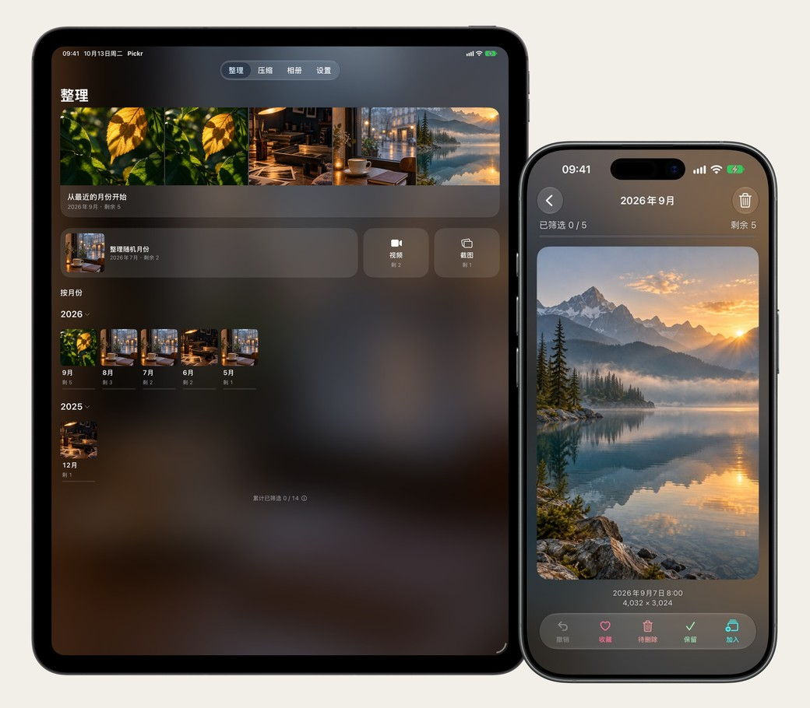
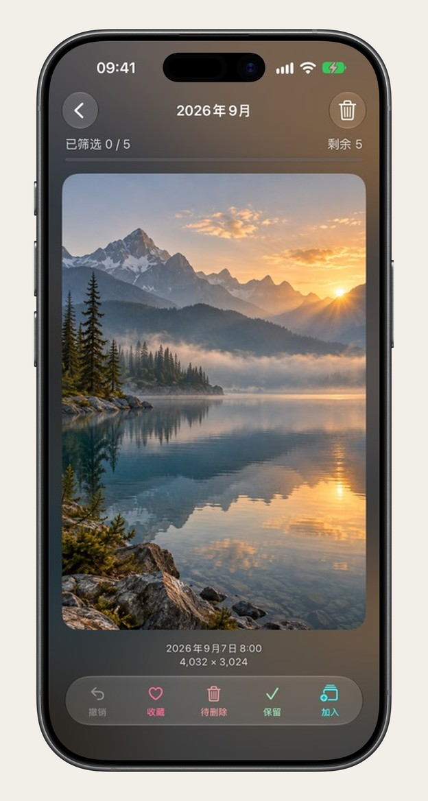
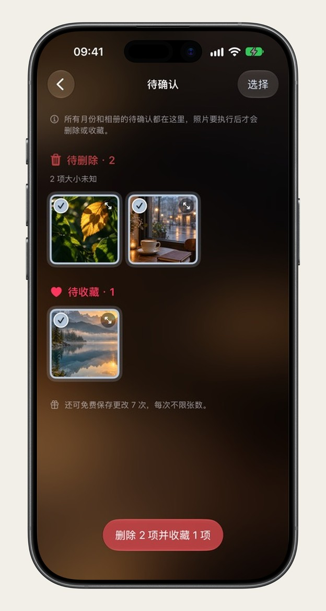
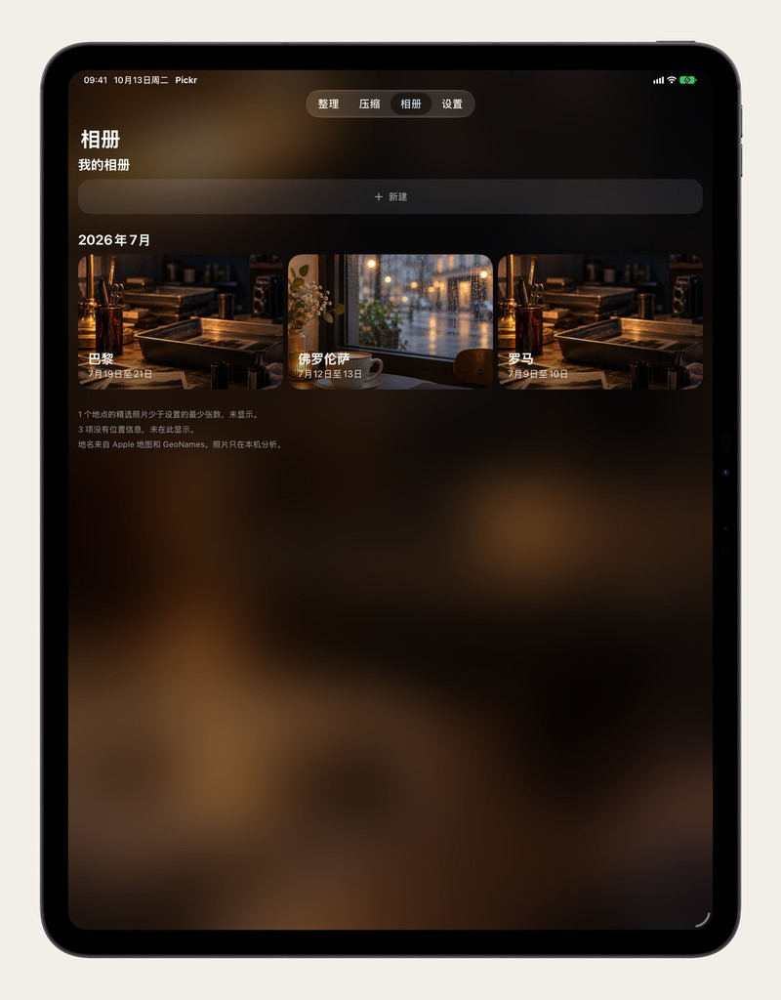
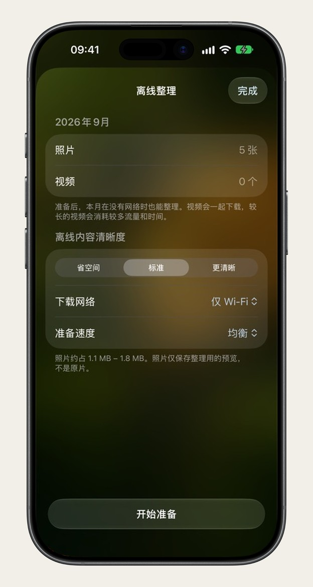

先看能省多少，对比过再替换
视频转 HEVC、照片转 HEIC，转换前先估算可释放的容量。每项结果都给出画质评分，随时按住对比原片与压缩版细节；看不出差别才替换原片，不满意则原片分毫不改。




把漫长的相册切成三五分钟就能理完的月份。随时停下，下次打开还在老地方。
从最近的月份开始，或抽一个随机月份。自动记住上次停下的那一张。

上滑标记待删除，下滑加入收藏，顺手还能收进「我的相册」，每步都可撤销。

删除不会当场发生。每一批先停在「待确认」，整批看过才执行，删后仍可在系统「最近删除」找回。
没有 Pickr 账号，照片从不上传服务器。空间瘦身、相似照片对比与旅行成册都在本机完成。
视频转 HEVC、照片转 HEIC，转换前先估算可释放的容量。每项结果都给出画质评分，随时按住对比原片与压缩版细节；看不出差别才替换原片，不满意则原片分毫不改。
按「哪几天在哪个城市」自动把旅途照片归成一本相册，并在本机挑出构图与清晰度更好的画面。遇到连拍或同一角度的相似照片，还能进「相似擂台」两两对比，只留最满意的一张。


整理进度与压缩标记通过你自己的 iCloud 私有库同步，换台设备接着理；登机前还能一键缓存整月原片。

针对 iPadOS 完整适配分栏与大画幅预览，看清暗房级细节与城市相册全貌。

出发前把某个月的 iCloud 照片提前缓存到本机，飞行模式或高铁无网时照常流畅过片。
日常把照片库整理干净所需的核心功能完全免费，不限张数、不设广告。
按月份、随机月份、视频或截图专项整理，自动记忆进度。
删除前集中复核，支持单张撤回或整批恢复。
本机识别连拍相似图两两比选，过片时顺手收集进自定义相册。
视频转 HEVC、照片转 HEIC，画质评分把关并支持按住对比原片。
按城市与日期自动生成旅行相册，精选高分照片存回系统「照片」。
整理决定与压缩标记同步至个人 iCloud 私有库，iPhone 与 iPad 接力整理。
免费可以用多少？ 按月整理、待确认复核、相似照片擂台和手动相册不限张数，永久免费。画质压缩、地点相册的保存与筛选、iCloud 跨设备同步是会员功能。
照片会被上传到服务器吗？ 不会。整理、相似分析与压缩全部在这台 iPhone 或 iPad 上完成，照片从不离开你的设备。开启 iCloud 同步时，也只有整理进度（不含照片本身）会存进你自己的 iCloud 私有库。
滑快了删错照片怎么办？ 上滑只是放进「待确认」批次，不会立刻删除。你可以随时撤销上一步，或在待确认页整批恢复；即使确认删除后，系统「最近删除」仍会为你保留 30 天。
压缩会损失画质或丢失拍摄信息吗？ 替换前有本机画质评分，也可随时按住对比原片与压缩版；拍摄时间、地点等 EXIF 元数据完整保留。不满意就不替换，原片原样不动。
现在如何下载体验？ Pickr 正在 TestFlight 持续打磨。点击页面上的「参加 TestFlight」发一封邮件给我们，当天就能收到测试邀请；支持运行 iOS 17 及以上的 iPhone 与 iPad。